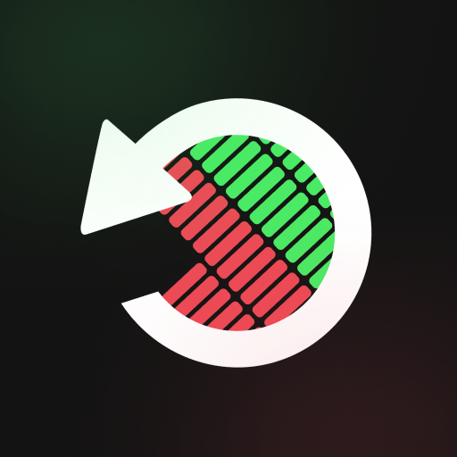

WeaoSMP.xyz
Live status tracker for the WeaoSMP Minecraft server
Pings the server every minute — no refresh needed

weaosmp.xyz
Contacting the server…
Checking
MOTD
Players
—
Version
—
Address
weaosmp.xyz
Software
—
Server capacity0%
Never checked
•
Next check in —s
Currently playing
—Waiting for the first ping…
Recent checks
—
Online
Offline
No data
Stored in your browser only — history starts when you first open this page.
Player count over time
How this works
The page pings weaosmp.xyz:25565 through the public
mcstatus.io API
(falling back to mcsrvstat.us) directly from your browser,
then refreshes every 60 seconds.
The player list depends on the server exposing its sample list in the ping response. Some servers hide it, or only return a handful of names — in that case the count is still accurate even when no heads are shown.